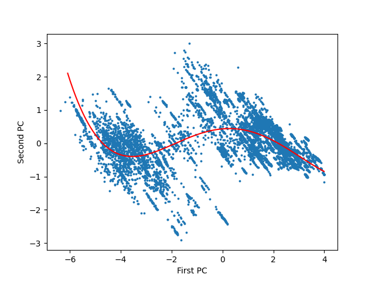
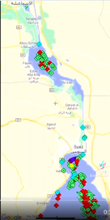
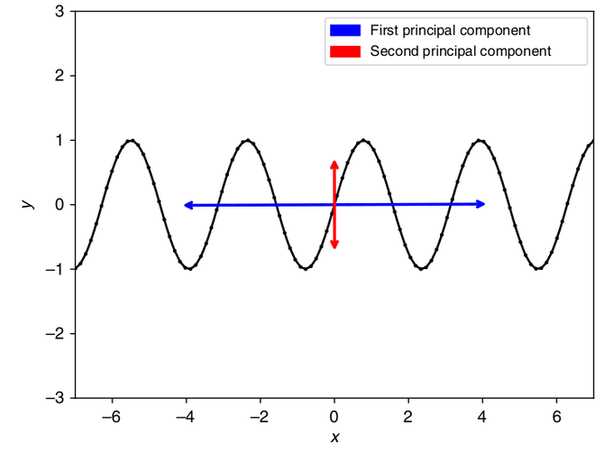
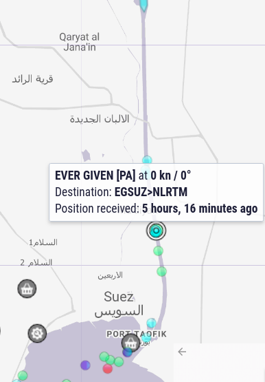
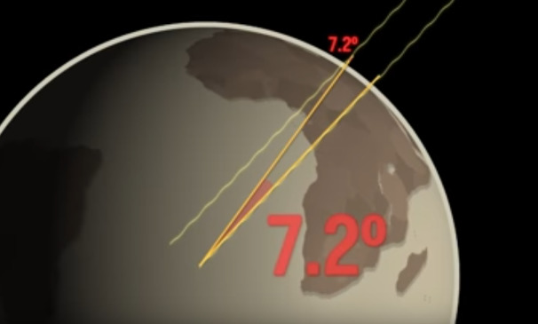
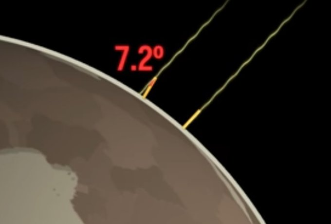
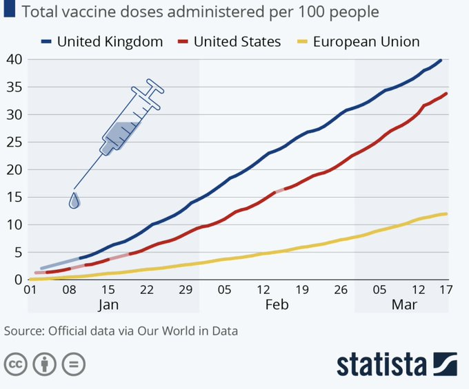

Week 12
"@gabriel_zucman
Your periodic reminder that 40% of the pre-tax income of the US middle-class goes to taxes and health insurance premiums (a de facto private head tax) today
... as opposed to less than 25% for billionaires"
"Myanmar security forces kill at least 114 people, including children"
Electricity is frequently misused. Elec is not suitable for power transmission for instance, terribly inflexible in case of storage.. In the future we will probably see less uses of it, not more.
"Northwestern University soft robot moves without hardware or electricity"
"Soft robots are a growing trend in the industry... DraBot works by controlling the air pressure coming into its wings"
Quantitative history. Very awesome.
Some of the 9 variables in the data file: "Polity population
(PolPop), extent of polity territory (PolTerr), the size of the
largest urban center, CapPop. Infrastructure (infrastr) captures
the variety of observable structures and facilities that are involved
in the functioning of the polity. The variable texts, which scales
from 0 to 9, sums the number of securely attested types of texts (that
is, coded as 'present'). The idea here is that the more sophisticated
a society is informationally, the more different types of texts it
will have in circulation. economic development is reflected in
Monetary System (money). Presence of writing system is in writing"
Attempted repl of a plot from the scale and information-processing paper. Similar output to Figure 2 is below. Data
import pandas as pd
from sklearn.preprocessing import StandardScaler
pnas_data1 = pd.read_csv('https://raw.githubusercontent.com/jaewshin/Holocene/master/data1.csv')
features = ['PolPop', 'PolTerr', 'CapPop', 'levels', \
'government','infrastr', 'writing', 'texts', 'money']
data_mat = pnas_data1.loc[:, features].values
scaler = StandardScaler()
scaler.fit(data_mat)
scaled = scaler.transform(data_mat)
data_mat = scaled
mean = np.mean(data_mat, axis=0)
data_mat -= mean
P, D, Q = np.linalg.svd(data_mat, full_matrices=False)
data = np.matmul(scaled, Q.T)
fig = plt.figure()
X, Y = data[:, 0], data[:, 1]
p = np.poly1d(np.polyfit(X, Y, 4))
plt.scatter(X, Y, s=3)
plt.plot(X, p(X),'r.')
plt.xlabel('First PC')
plt.ylabel('Second PC')
plt.savefig('pnas.png')

"While the Wright brothers are credited with the first powered flight of a heavier than air vehicle that could take off and land from level ground, it was the German aviator, Otto Lilienthal, who first mastered the aerodynamics of hang gliders. In fact, the experiments of Lilienthal helped the Wright brothers a great deal in understanding the basics of flight. Lilienthal himself built eighteen different hang glider models over a period of five years and test flew them"
I agree. Spices are absolutely necessary to keep meat bacteria-free, they are in fact healthy, not just tasty.
"Humans' use of antimicrobial spices developed in parallel with food-spoilage microorganisms, Cornell University biologists have demonstrated in a international survey of spice use in cooking... The proximate reason for spice use obviously is to enhance food palatability... But why do spices taste good? Traits that are beneficial are transmitted both culturally and genetically, and that includes taste receptors in our mouths and our taste for certain flavors. People who enjoyed food with antibacterial spices probably were healthier, especially in hot climates. They lived longer and left more offspring. And they taught their offspring and others: 'This is how to cook a mastodon.' We believe the ultimate reason for using spices is to kill food-borne bacteria and fungi."
It was all good when sugered water invent in US had its bottle produced in Phillipines, cap in Singapore, soda in Mexico, bottled in Spain, and shipped to US.. It aint so fine when invented in DE, bottled in Belgium, and all shipped to UK/US, is it? #globalooney
"@james_oaten
Australia's ambassador to China says Beijing's trade behaviour is 'vindictive'"
"@unzicker_a
#Corona München will Modellstadt werden, aber der nächsten PCR-Testtermine gibt es im April?? Was sind heir für idioten am Werk?"
Dining Rooms - La Citta' Nuda #music
Suez traffic update

"@newyorkerunion
BREAKING: The New Yorker Union has voted 98% in favor of authorizing a strike"
"@_laujessie
Steve Tsang of @SOAS_CI called Beijing's move an 'overkill' and says EU sanctions 'were extremely calibrated in order to basically do something, but not to an extent that would necessitate a response'"
"@emollick
Another new paper that finds no benefits in using more complex machine learning techniques over standard logistic regression in predicting medical outcomes"
"@SOSV
Alternative protein investments are taking off, says @GoodFoodInst, citing 3x increase in plant-based meat, dairy, and egg companies and a 6x increase in cultivated meat startups"
Aha.. Ozzies call the Tasman Sea "The Ditch"?. For US UK the Atlantic is "The Pond". Nothing for the Pacific?
Haha of course PCA of simple sinusodial wld be like this.. imagine self at that blue line u constantly see points of plot falling all around you - largest variation.

Data is at GH
"Seshat: Global History Databank.. is an ambitious coding of more than 1500 variables containing state-of-the-art knowledge on variables related to social complexity for hundreds of polities. The polities in the Seshat database for which comprehensive data are available span six continents and date from the Neolithic to the middle of the last millennium"
Propinquity 😶
Quality over quantity (or, cant have more quantity without quality first)
"@emollick
A paper by mathematicians & archeologists studying the past 10k years argues population growth needs to be matched with information processing ability... otherwise societies collapse. Each level of info processing (writing, currency) unlocks new growth"
"The torch will be lit in the town of Olympia, Greece and then moved across a large number of Japanese cities... Some of the other eco-friendly initiatives include beds at the Olympics Village made out of recyclable cardboard and medals made from recycled electronic waste material. About 500 hydrogen-powered fuel cell vehicles will also be used during the Olympics"
"The Tokyo 2020 Olympic torch, which began its 121-day relay from Naraha, Fukushima, is being powered by hydrogen in selected legs of the relay meaning there will be no carbon emissions from the torch itself"
"The great seismic quiet period... Noise from trains, airplanes, industrial processes, and other sources is recorded on seismometers worldwide. Disentangling this noise is important for extracting out natural signals [scientists] found a substantial decrease in noise resulting from lockdown measures imposed in response to the coronavirus disease 2019 pandemic"
The Economist: “In 2020 China abused human rights in Xinjiang, waged cyber-warfare, threatened its neighbours and intensified the cult of personality surrounding President Xi...Yet when they talk to shareholders about China, global firms gloss over this brutal reality..."
"@haxieMB
Flag of India With #Covid cases surging in India, Delhi has reportedly decided to place a temporary ban on exports of #AstraZenaca jabs in a bid to prioritise India's own innoculation programme"
"@F24Debate
'It's like cholesterol. Before all #Arabs were bad, but now there's good AND bad.' With #Netanyahu potentially relying on Arab support to stay in power .. the Israeli PM has been forced to change his tune"
Built by a French-Egypt company.
We are talking big construction in Egypt so of course ppl had to die as in during the time of Pheroahs.
"[The Suez Canal construction took] 10 years. Digging the canal began on April 25, 1859.. Around one million Egyptians, mostly peasants, were recruited to do the job under harsh conditions including poor wages.. They had to remove about 74 million cubic metres of earth... Around 120,000 of the labour died in the process due to food shortages, lack of health care and ill-treatment"
Satellite images improved ... #suez
Which country does the canal blockage hurt the most? China? #suez
CNBC: "Massive cargo ship still stuck in Egypt's Suez Canal could take weeks to clear"
"@ds_wats0n
Admittedly weird hangup but ever since I started doing my own #taxes I've thought that brackets should be replaced by smooth functions. Apparently actual economists have worked out the details and it's kind of awesome"
"@maxberger
Bernie's conversation with @ezraklein is worth listening to in full. Bernie's comments on Trump's twitter account drove all the headlines, but his comments on Biden and the shifts in the Democratic Party (and overall optimism) really comes through"
U.S.-China rivalry will probably come to a head in the 20s, argue Michael Beckley and Hal Brands.
— Noah Smith 🐇 (@Noahpinion) December 28, 2020
I tend to agree.https://t.co/kwiq95Fwpg
Using pre-recorded lectures will keep ed quality high.
Record once, use everywhere. Govs can fund recording of such vids for every subject, kids at school watch them over tablets. No more teachers in the old sense of the word.
There will be "graders" not teachers in the new system. Grade is pass/fail. Graders can hang around in study halls if they are not grading (rare) both to keep it quite, and answer the occas questions in their field.
I like this lecture format. You see the lecturer, and the equations simply appear while he talks, parts gets highlighted for emphasis, and necessary pieces get carried over to the next slide if necessary. 3Blue1Brown style, which is all animation and lecturer voice, is fine too but this one has more of a lecture feel to it.
Rat Race? Jon Lovitz driving around in Hitler's car giving speeches in fake German accent to veterans (trailer).. Its already funny.
Time to Kill, good recommendation.
"@HydrogenHub
Three UK firms are to be the receivers of a £54m package from the Government in order to develop hydrogen-fuel technology... Read more in this @BBCNews article [below]"
The blocking ship is out they say? It was still in the Canal at Oh Nine Hundred Hours EST last I checked.

"@PACEmCHP
100 million boilers are installed in residential buildings across Europe. Learn how development of Fuel Cell micro-Cogeneration can accelerate energy savings and emission reductions in the building sector"
If the news of financial commitments to #climategoals and #decarbonisation technologies is anything to go by, #hydrogen will be one of the buzzwords of this decade.
— Hydrogen Europe (@H2Europe) March 24, 2021
This is certainly the case in the #transportation sector. #HydrogenNow 💧🚗🚛🚍🚆✈️https://t.co/XNyA20shz2
Cecilia not bad ho
@ashleytownshend
China’s use of ... disinformation, economic threats, covert foreign interference etc. — is and will remain the day to day reality of international affairs in our region. It’s not the product of a mishandled China relationship; it is the way Beijing seeks to advance its interests against countries, like Australia, that do not comply with its preferences and are active in defending their own.
"Iwatani is [also] exploring the production of 'green hydrogen' (produced from nonfossil fuels) with KHI and Fortescue Metals Group, the world’s fourth-largest iron-ore producer, in Australia. Additionally, Iwatani is studying the production of green hydrogen with Australian power company Stanwell"
"Since 1983, [KWI] has developed, manufactured, and operated a liquefied-hydrogen storage tank at the rocket-launch site facility of the JAXA Tanegashima Space Center. The hydrogen liquefaction system, installed in the Hydrogen Technology Demonstration Center at the Harima Works, has the capacity to liquefy approximately five tons of hydrogen per day...
KHI and Iwatani Corp .. are conducting a pilot demonstration for an international liquefied-hydrogen supply chain using hydrogen produced from coal in the state of Victoria, Australia. This flagship project launched in 2015 with subsidization from New Energy and Industrial Technology Development Organization (NEDO). In 2021, the world’s first liquefied-hydrogen carrier, built by KHI, will make its first round-trip between Japan and Australia. And Iwatani will load, unload, and store the liquefied hydrogen"
Noo no.. dont wave ur arms on that CFL condition.. You need to derive that muthafucka
Time to Kill it is
Just wrote a 15 line recommendation algo, Movielens file has over 10 mil ratings. Simple user-item cosine similarity based collab approach. Works fine.
MovieLens keeps its ratings records relatvely up-to-date.. nice. Last update was on 2018.. That cld be good enough..
"MovieLens Latest Datasets", the 265 MB file, here.
Really tired of these shit recommenders.. Pointy clicky clicky click.. Fuckin UI
I might have to write my own
Heiner Igel, good lecturer.
The best way to see these "AI" products is as parrots. Like parrot can speak, and make intelligable human-like sounds, and even say stuff on occasion that seems to fit a certain mood, they cannot converse with humans. These tools are trained with very specific aims in mind, writing a story wld be a tough barrier to cross.
"Can robots write stories?.. Strange things unfold when artificial intelligence attempts to write a story. Author Daniel Kehlmann recounts his co-authoring experiment"
"@gabriel_zucman
Honored to testify before the Senate Budget Committee on Thursday, about ways to improve the progressivity of the US tax system"
"@Michael_Zingale
I am 100% adding things I've already done to my to-do list just so I can cross them off!"
"@JontheHunt
How quickly does a #hydrogen #fuelcell car fill? 3 mins 11secs for 139kW ready for another 400 miles. Molecules move faster than electrons 💪🌬🍃"
Shld the reverse of density (ie opposite of population / landmass ratio) be in a power index..? 🤔 Being able to command / keep / manage a big landmass with few people should count for something.. bcz it requires certain form of organization, management apparatus.
"Japan’s ongoing technological advances bring hydrogen to the cusp of adoption for a range of applications, including fueling passenger cars, power-generation turbines, steelmaking..." Via @HarvardBiz. #cleanenergy #greenenergy https://t.co/FRCcqKUUSj
— SunHydrogen (@SunHydrogen) March 23, 2021
Tycho – Weather (Nitemoves Remix) #music
This thing will eat itself if we wait long enough #woke
They were both very young BTW when they did this. And staffer used the N-word on a wigga
Too good
"A senior Teen Vogue staffer who expressed concern about the racist tweets posted by the magazine's now-departed editor used the N-word in her own tweets. Christine Davitt, a senior social media manager at Teen Vogue, wrote two tweets in 2009 to a friend identifying him as a 'ni--a,' and another in 2010 using the word 'ni--a'"
"To achieve the net-zero emissions goal, the Biden administration is banking on increasing the green hydrogen supply and making it available at a fraction of the cost of natural gas..." Via @MarketRealist. #greenhydrogen #cleanenergy https://t.co/Voa9N2j6c0
— SunHydrogen (@SunHydrogen) March 22, 2021
Resillience is part of good tech, yes. Imagine having an electric rifle and the shit runs out of battery in the middle of a skirmish.. That rifle would not be high tech, it'd just be dumb tech.
"French army chief of staff: 'We should therefore not get caught up in very high technology. Our weapon systems must always be relatively resilient and stable and ... they must be able to operate in degraded mode'"
"Tax Evasion at the Top of the Income Distribution: Theory and Evidence"
"@JohnHemmings2
'freedom of information requests obtained by Reuters revealed that at least half of London’s boroughs have bought and deployed surveillance systems made by Chinese suppliers, including Hikvision [linked to] Beijing’s repression of Uyghur Muslims in China.'"
Cohomology 😶
Will Ferrell as Mustafa.. He gets thrown into the lava pit. 🤣
"Double-duty catalyst generates hydrogen fuel while cleaning up wastewater"
"Woodland, Calif.-based Sierra Northern Railway (SERA) will build a hydrogen fuel cell (HFC)-powered switcher under a nearly $4 million grant from the California Energy Commission (CEC)"
"Tanker Firm Ardmore Backs Hydrogen Fuel Cells for Shipping"
Oh yea...

Oh yea...

Sure the Sun is hotter than lava, but not a million times hotter. It's only five times hotter.
Easy to intuit the Sun is liquid. What is the hottest natural thing we know on Earth? It is lava. And lava is liquid, it flows. We know this. So why do some so readily accept the gaseous hyphothsis?
Accusers keep piling up on AC, but the potential challenger is ruined?
"@ryanobles
Significant development-> Rep. Tom Reed (R-NY) apologizes for an incident in 2017 that led to an accusation of sexual misconduct and said he will not run for public office in 2022. Reed was considering a challenge to NY Gov. Andrew Cuomo"
Do you ever worry that technology is primarily good at solving problems we don't have? pic.twitter.com/eyiGtAMaKX
— foone (@Foone) March 20, 2021
Lesson here for all teachers, dont dumb stuff down for shinier delivery. Your jobs is to demystify, not creating a new level of mystery around your character, your props, or whatever.
Carl Sagan had an eduvid on that too. Not bad, but lemme tell u what you did wrong here Carl, forgot to mention how stick angle translates to btw-city angle..
He is really rockin that brown jacket with the turtleneck tho. Very disco, Studio 54, I dig it, but some stuff got lost during "the show".
Extend rays like below, implies angle between two cities is 7.2 relative to Earth center

Btw city angle is 7.2 out of 360 deg. He had a guy walk btw cities, dist 5000 stadia = 800 km. Using angle ratio equalness to circumference / city dist ratio,
print ('%0.0f km' % (360/7.2 * 800))
40000 km
This guy found a good approx for Earth circumference with f-ing sticks, shadows, simple angle measurement, plus indirectly debunked flat Earth hypo. Ella re malaka
Library as in the freaking Library of Alexandria
First approx calculation of Earth circumference, BC 200s. Oh yeah. Erotosthenes (scientists, head librarian) heard from someone, during summer solst., stick in Syene has no shadow, at noon. He tried it in Alexandria (little north) saw shadow. Measured angle, 7.2 degrees,

B Johnson net approval up to -3%. Major improvement over -25% 6 months earlier.
Vacc dev was too slow. The delay gave time to the virus to mutate. Clda been done in a month, two tops.
Politico: "The Rocky Road to Bidencare — Fresh off securing the first major expansion of Obamacare since the law’s passage a decade ago, Democrats are dipping their toes into the next major health care fight... The health care industry is already trying to kill it. A lobbying group backed by the industry is running state and national ads against the idea"
Beat.dowsing - Renegades #music
"U.S., India Vow to Deepen Defense Ties"
Al Jazeera: "EU threatens to ban AstraZeneca exports if vaccines not delivered... EU chief says AstraZeneca could see its COVID vaccine exports blocked if it does not meet its contractual obligations"
Dang

Privilege? They are no more privelege than Coca Cola is a drink.
"@ClaraDFMarques
Vaccines are a privilege that few have, so appreciate it"
Insight (feat. Asheru) #music
What wld someone's first impression of Anthony Hopkins be? Classically trained actor, has that posh accent, probably watches those artsy movies all the time.. But the guy isnt like that.. He likes action. He watches Schwarzenegger movies. He said so in an interview. So u thought something abt the guy, but he was something else. He clearly likes the genre, he keeps playing roles in them!
Calculating distance ratios for Moon and the Sun, ancient times.
Dude waited until it was half moon, then he knows Earth-Moon-Sun are at right angle (light has to hit perfectly from one side for that half shadow to happen),

Then he estimates angle $\varphi$, around 87 deg (point to one, then swing arm to the other, angle covered is $\varphi$). Now u got your right angle triangle, rest is basic trig, reverse of cos, $1/\cos(\varphi)$
"%0.2f" % (1./np.cos(np.deg2rad(87)))
Out[1]: '19.11'
The sun is roughly 19 times further than the Moon.
Well done Aristarchus
I dont like ragging on govs on vaccs, I know many are doing their best. But IMO we are stuck with some sucky infra, this cant be the setup we meet the next pandemic with.